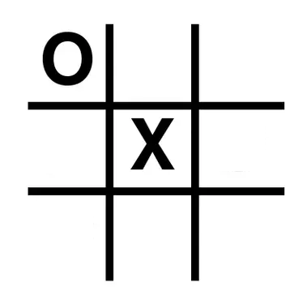
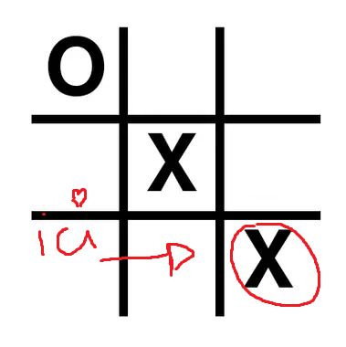
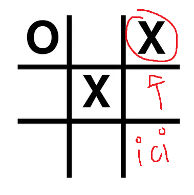
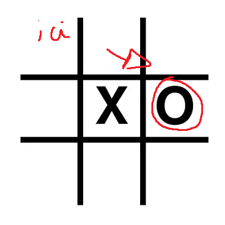
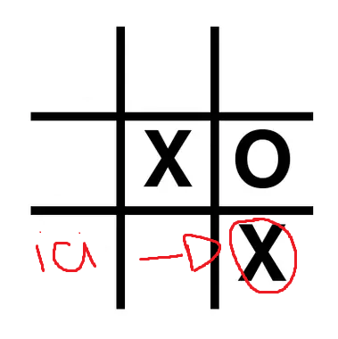
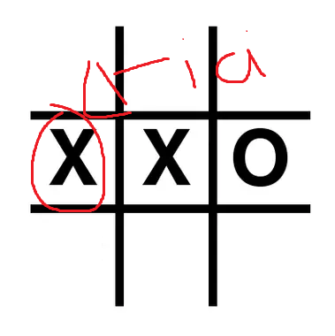
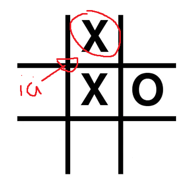

2/ Mid game
Votre deuxième choix dépend du choix qu'a choisi votre adversaire précedemment
De plus il existe plusieurs métodes afin de PULVERISER son ennemie :)
Votre adversaire choisie un coin :

Dans cette situation :
Croix dans un coin :
1/ Vous placez votre croix dans le coin opposé à celui de votre ennemi juré.

Remarque : Dans cette situation vous n'avez aucune chance de gagner sauf si votre adversaire est bourré mais n'y pensons pas !
Pour mieux comprendre pourquoi -->
2/ Vous placez votre croix dans un autre coin .

Remarque : Dans cette situation non plus vous aurez du mal à gagner !
Pour mieux comprendre pourquoi -->
Votre adversaire choisie autre qu'un coin :

Dans cette situation :
Croix dans un coin :

Remarque : Dans cette situation vous avez toutes les chances de votre côté
Pour mieux comprendre pourquoi -->
Croix sur le côté opposé du cercle

Remarque : Pourquoi tu es aussi nul ?
Pour mieux comprendre pourquoi --> IL N'Y A RIEN A COMPRENDRE PUNAISE
Croix sur un côté autre qu'opposé du cercle

Remarque : Pourquoi tu es aussi fort ?
Pour mieux comprendre pourquoi tu es fantastique-->